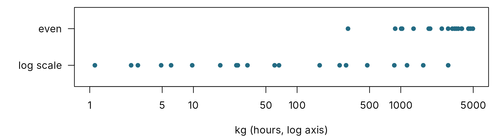
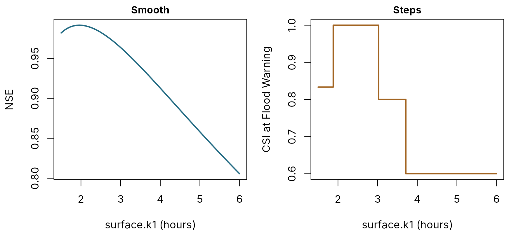
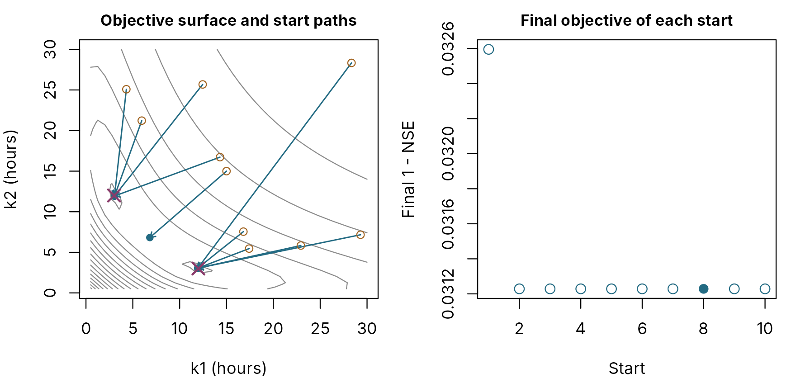

How automatic calibration works
pdmS7 documentation
Source:vignettes/auto-calibration.Rmd
auto-calibration.RmdAutomatic calibration means letting the computer try parameter values
until the simulated flow matches the measured flow as well as it can.
calibrate_pdm() does this. It helps to picture it as a
walker trying to reach the lowest point of a landscape in thick fog:
- where the walker may go is set by the bounds: the lowest and highest value each parameter may take;
- how the ground is laid out is the search scale: whether each step of distance means the same change everywhere;
- how the walker moves is the method: feeling for the slope, or comparing a few points;
- what “low” means is the objective: the score being minimised, such as 1 - NSE.
This article takes each in turn, in plain terms, with an example: then how many starts to use and what a calibration costs, staged calibration, calibrating for floods, and how the final candidate is chosen. Calibrating a catchment from start to finish runs all of it in one call; How the model structure is chosen covers the choice of soil store, recharge and groundwater; the scores themselves are in Scoring a simulation.
The examples use a made-up catchment whose true parameters we know, with a Flood Warning threshold at 3.7 m3/s.
set.seed(8)
n <- 24 * 40
time <- seq(as.POSIXct("2024-01-01", tz = "UTC"), by = 3600, length.out = n)
forcing <- data.frame(time = time, pet = 0.04,
rain = ifelse(stats::runif(n) < 0.08, stats::rgamma(n, 0.7, scale = 4), 0))
truth <- pdm_presets("standard")
truth$area_km2 <- 50
truth$recharge$kg <- 300
truth$distribution$cmax <- 120
# Runs start in steady state at a given flow, as calibrate_pdm() does at the first observed flow.
run <- function(config, start_flow = observed[1]) {
model <- pdm_from_config(config)
run_pdm(model, forcing, initial_state_from_flow(model, start_flow, 0.7))$output$q_m3s
}
observed <- run(truth, start_flow = 0.6) * exp(stats::rnorm(n, 0, 0.03))
warning_flow <- c(`Flood Warning` = 3.7)
scored <- 241:n # the first ten days are warm-upHow the search works
Parameters come in different units: millimetres, hours, fractions. To search them together, each is stretched or squeezed onto the same scale, from 0 at its lowest allowed value to 1 at its highest. The search moves around on that common scale. Every point it tries is turned back into real parameter values, the model is run, and the result is scored on the calibration period.
With several starts, the search is begun from several different places and the best place anyone reaches wins. That guards against stopping in a dip that is not the deepest.
Bounds
Bounds are the fences around the search: the lowest and highest value
each parameter may take. They should take in every value that makes
physical sense and nothing more. Too narrow, and the right answer may be
fenced out; too wide, and the search wastes time on values no real
catchment has. calibration_bounds() gives sensible fences
for every part of the model, from a table that comes with the
package:
show_bounds(calibration_bounds(pdm_presets("standard")), note = TRUE)
#> path lower upper scale
#> 1 distribution.cmax 20 800 linear
#> 2 distribution.b 0.05 2 linear
#> 3 recharge.kg 1 5000 log
#> 4 surface.k1 0.5 72 log
#> 5 surface.k2 0.5 72 log
#> 6 groundwater.kb 100 1000000 log
#> note
#> 1 Maximum store capacity (mm)
#> 2 Shape: low values give a near-uniform store
#> 3 Recharge time constant (h); spans orders of magnitude
#> 4 Time constant of the first store (h)
#> 5 Time constant of the second store (h)
#> 6 Cubic store constantTwo defaults guard against fits that look good for the wrong reasons.
A split recharge’s share recharge.alpha is searched between
0.05 and 0.95, never at 0 or 1, where one flow path would be switched
off. And one parameter is missing on purpose: the rainfall factor
fc. It is locked at its value in the configuration, 1
unless you change it. A calibrated factor soaks up whatever was wrong
with the rainfall totals in the calibration years, and then carries that
correction into operation, where the rain may come from other gauges or
another radar product and need none. Unlock it only when you know the
rainfall’s bias and trust it to stay put, by giving it bounds.
If you know a catchment, move any fence, add a parameter to calibrate (the rainfall factor here), or lock one at its current value:
b <- calibration_bounds(pdm_presets("standard"),
overrides = list(fc = c(0.9, 1.2), td = c(0, 3)),
exclude = "groundwater.kb")
show_bounds(b)
#> path lower upper scale
#> 1 fc 0.9 1.2 linear
#> 2 distribution.cmax 20 800 linear
#> 3 distribution.b 0.05 2 linear
#> 4 recharge.kg 1 5000 log
#> 5 surface.k1 0.5 72 log
#> 6 surface.k2 0.5 72 log
#> 7 td 0 3 linearSearch scale
Some parameters can sensibly be anywhere across a huge range. The
recharge time constant kg, for instance, might be 2 hours
in one catchment and 2,000 in another. If the search spreads its effort
evenly between 1 and 5,000, the whole stretch from 1 to 50 hours, where
many quick-responding catchments sit, gets only 1 per cent of the
attention.
A log scale fixes this by giving each tenfold step the same room: 1 to 10 gets as much attention as 10 to 100, and as 1,000 to 5,000. The picture shows where twenty random starting values land each way.
set.seed(1)
even <- stats::runif(20, 1, 5000)
logged <- exp(stats::runif(20, log(1), log(5000)))
par(mar = c(4, 6, 0.6, 0.6))
plot(c(even, logged), rep(2:1, each = 20), log = "x", pch = 16, col = pal[1], yaxt = "n",
ylim = c(0.5, 2.5), xlab = "kg (hours, log axis)", ylab = "", xlim = c(1, 5000))
axis(2, at = 2:1, labels = c("even", "log scale"), las = 1)
Twenty random starting values for kg between 1 and 5,000 hours, drawn evenly (top) and on a log scale (bottom), plotted on a log axis.
Here is the difference in practice, for a catchment whose true
kg is 40 hours, with the search starting from 1,000:
flat <- pdm_presets("standard")
flat$recharge$kg <- 40
flat_obs <- run(flat)
start <- flat
start$recharge$kg <- 1000
args <- list(start, forcing, flat_obs, lower = c(recharge.kg = 1), upper = c(recharge.kg = 5000),
warmup = 240, objective = "nse", control = list(maxit = 50))
# The even search ends far from the truth, at a recharge constant whose steady start cannot
# balance at the first flow; calibrate_pdm() warns about that, and the warning is hidden here.
even_fit <- suppressWarnings(do.call(calibrate_pdm, args))
log_fit <- do.call(calibrate_pdm, c(args, list(log_scale = "recharge.kg")))
data.frame(scale = c("even", "log"),
kg = round(c(even_fit$parameters, log_fit$parameters), 2),
model_runs = c(sum(even_fit$start_results$evaluations),
sum(log_fit$start_results$evaluations)))
#> scale kg model_runs
#> 1 even 555.16 78
#> 2 log 40.00 33Both find the right answer; the log-scale search gets there in about
a third of the model runs. The bounds table marks which parameters
should be searched this way, and compare_structures() and
calibrate_batch() follow it automatically. With
calibrate_pdm() and log_auto_calibration(),
list them in log_scale.
How the search moves
calibrate_pdm() has two ways of moving through the
fog.
| Method | How it moves | Good for | Cost |
|---|---|---|---|
lbfgsb (the default) |
Feels which way the ground slopes and steps downhill | Smooth scores: NSE, RMSE, log RMSE | Fewest model runs |
nelder_mead |
Keeps a small group of points, compares their scores, and moves the group towards the best | Scores with sudden jumps or flat stretches | Several times more model runs |
dds |
Perturbs a shrinking random subset of parameters from the best point so far (Tolson and Shoemaker, 2007) | Many parameters, rough scores, a fixed budget of runs | Exactly maxit runs per start |
Which one to use depends on the shape of the ground. Most scores are like a smooth hillside: change a parameter a little and the score changes a little, so there is always a slope to feel. But a score that counts floods, such as CSI, is like a staircase. It only changes when a simulated peak moves from one side of the warning threshold to the other, and between those moments it stays exactly the same. The two pictures show the two scores as one parameter, the first surface time constant, is changed and everything else is held at the truth.
grid <- seq(1.5, 6, length.out = 60)
profile <- t(vapply(grid, function(k) {
cfg <- truth
cfg$surface$k1 <- k
sim <- run(cfg)[scored]
c(nse = pdm_scorecard(sim, observed[scored])[["nse"]],
csi = pdm_threshold_scores(sim, observed[scored], warning_flow)$csi)
}, numeric(2)))
par(mfrow = c(1, 2), mar = c(4, 4.2, 1.5, 0.8))
plot(grid, profile[, "nse"], type = "l", lwd = 2, col = pal[1], xlab = "surface.k1 (hours)",
ylab = "NSE", main = "Smooth", cex.main = 0.95)
plot(grid, profile[, "csi"], type = "s", lwd = 2, col = pal[2], xlab = "surface.k1 (hours)",
ylab = "CSI at Flood Warning", main = "Steps", cex.main = 0.95)
The two objectives along one parameter, the first surface time constant, with everything else at the truth. NSE changes smoothly; CSI at Flood Warning is a staircase.
On the left there is always a slope to follow down to the best value. On the right, the score sits at 0.60 for every value from about 3.7 to 6.0 hours. Standing anywhere on that step, the slope-feeling method feels no slope at all, decides it has arrived, and stops. At the edge of a step, the slope it feels is a sudden cliff that tells it nothing useful.
The comparing method does not need slopes. It looks at the scores of a few points spread around, and moves towards the best of them, so it can walk across a flat step to the next one down. pdmS7 keeps every point it tries inside the fences.
Several starts
A search that feels for the slope stops at the first dip it reaches,
which need not be the deepest. The two time constants of the surface
cascade, k1 and k2, show it plainly: a cascade
of two linear stores gives exactly the same outflow with the two
constants swapped, so the score has two equally good lowest points,
mirror images about the diagonal.
set.seed(11)
ms_n <- 24 * 90
ms_forcing <- data.frame(
rain = ifelse(stats::runif(ms_n) < 0.06, stats::rgamma(ms_n, 0.7, scale = 4), 0),
pet = 0.08
)
ms_truth <- pdm_presets("standard")
ms_truth$area_km2 <- 50
ms_truth$surface$k1 <- 3
ms_truth$surface$k2 <- 12
ms_truth$recharge$kg <- 400
ms_model <- pdm_from_config(ms_truth)
ms_observed <- run_pdm(ms_model, ms_forcing, initial_state_from_flow(ms_model, 1, 0.7))$output$q_m3s *
exp(stats::rnorm(ms_n, 0, 0.05))Both constants are searched between 0.5 and 30 hours, from
k1 = k2 = 15, which lies on the diagonal, with nine further
random starts:
ms_config <- ms_truth
ms_config$surface$k1 <- 15
ms_config$surface$k2 <- 15
ms_lower <- c(surface.k1 = 0.5, surface.k2 = 0.5)
ms_upper <- c(surface.k1 = 30, surface.k2 = 30)
ms_fit <- calibrate_pdm(ms_config, ms_forcing, ms_observed, ms_lower, ms_upper,
objective = "nse", starts = 10L, seed = 2, control = list(maxit = 60))
ms_fit$start_results
#> start objective convergence evaluations best surface.k1 surface.k2
#> <int> <num> <int> <int> <lgcl> <num> <num>
#> 1: 1 0.03259536 0 50 FALSE 6.817050 6.817050
#> 2: 2 0.03122871 0 60 FALSE 3.049018 11.935294
#> 3: 3 0.03122871 0 60 FALSE 11.935286 3.049017
#> 4: 4 0.03122871 0 175 FALSE 11.935256 3.049026
#> 5: 5 0.03122871 0 70 FALSE 3.049015 11.935297
#> 6: 6 0.03122871 0 90 FALSE 3.049013 11.935293
#> 7: 7 0.03122871 0 50 FALSE 11.935310 3.049015
#> 8: 8 0.03122871 0 60 TRUE 11.935333 3.048998
#> 9: 9 0.03122871 0 85 FALSE 3.049021 11.935290
#> 10: 10 0.03122871 0 75 FALSE 11.935306 3.049015
grid <- seq(0.5, 30, length.out = 40)
ms_loss <- function(k1, k2) {
cfg <- ms_config
cfg$surface$k1 <- k1
cfg$surface$k2 <- k2
model <- pdm_from_config(cfg)
# calibrate_pdm() starts every evaluation in steady state at the first observed flow; so does
# this.
sim <- run_pdm(model, ms_forcing,
initial_state_from_flow(model, ms_observed[1], 0.7))$output$q_m3s
sum((sim - ms_observed)^2) / sum((ms_observed - mean(ms_observed))^2)
}
ms_surface <- outer(grid, grid, Vectorize(ms_loss))
set.seed(2)
unit <- rbind(c(14.5, 14.5) / 29.5, t(replicate(9, stats::runif(2))))
start_points <- 0.5 + unit * 29.5
tab <- ms_fit$start_results
par(mfrow = c(1, 2), mar = c(4, 4, 2, 1), cex.main = 0.95)
contour(grid, grid, log10(ms_surface), nlevels = 14, col = "grey55", drawlabels = FALSE,
xlab = "k1 (hours)", ylab = "k2 (hours)", main = "Objective surface and start paths")
arrows(start_points[, 1], start_points[, 2], tab$surface.k1, tab$surface.k2,
length = 0.06, col = pal[1], lwd = 1.3)
points(start_points, pch = 1, col = pal[2])
points(tab$surface.k1, tab$surface.k2, pch = 16, col = pal[1])
points(c(3, 12), c(12, 3), pch = 4, cex = 1.6, lwd = 2, col = pal[4])
plot(tab$start, tab$objective, pch = ifelse(tab$best, 16, 1), col = pal[1], cex = 1.3,
xlab = "Start", ylab = "Final 1 - NSE", main = "Final objective of each start")
Left: contours of 1 - NSE over the two time constants, with each start’s path from its starting point (open circle) to where it stopped (filled circle). Crosses mark the two true optima. Right: the final objective of each start; the filled point is the start returned.
Start 1, the configured point, slid along the diagonal and stopped at
a saddle where k1 = k2: on the diagonal the slope points
along it, not off it, so the search cannot see the better valleys either
side. The random starts found one of the two true optima. A single start
from this configuration would have stopped at the saddle with no
warning.
start_results shows whether the starts agree:
| Column | Meaning |
|---|---|
objective |
Final objective of the start; for NSE, 1 - NSE |
convergence |
0 normal; 1 iteration limit reached; 51 or 52 line search could make no further progress |
evaluations |
Model runs used, including the gradient calls optim
leaves out of its own count |
best |
The start returned |
| One column per parameter | Where the start ended |
- Starts agree on objective and parameters: a well-defined optimum; fewer starts would do.
- Starts agree on objective but not parameters, as here: the data cannot separate the parameters. Fix one or narrow the bounds.
- Starts disagree on objective: several dips. Keep enough starts to find the deepest reliably.
What a calibration costs
basins x starts x model runs per start x seconds per run / coresModel runs per start depend on the number of parameters, the bounds
and the catchment. Measure them on a pilot before committing compute:
inst/examples/pilot_calibration.R calibrates a few basins
with many starts and reports the start at which each found its best, the
spread of objectives and a budget for the full run. Its synthetic dry
run needs no data:
Sys.setenv(PILOT_SYNTHETIC = "1")
source(system.file("examples", "pilot_calibration.R", package = "pdmS7"))With the compiled engine, one run of 29 years at 15 minutes takes
about a second on a 2.1 GHz Xeon. calibrate_pdm() runs its
starts one after another; calibrate_batch() and
compare_structures() spread basins or structures across
cores with cores. Give each basin its own seed so that
every run can be repeated exactly.
Objectives
The objective is the score the search tries to make as small as possible: it decides what “good” means.
objective |
Makes smallest | Pays most attention to |
|---|---|---|
nse |
1 - NSE | Floods; the usual choice |
rmse |
The typical error, in m3/s | Floods, measured in flow |
log_rmse |
The typical error of log flows | Low flows |
log_nse |
1 - NSE of log flows | Low flows, scored like NSE |
threshold |
The threshold part alone (below) | Crossing warning thresholds, and nothing else |
Any of these can carry a volume penalty:
volume_weight = 1 adds the absolute volume error, so that 5
per cent too much water in total costs 0.05. Staged calibration, below,
uses it to hold the water balance while fitting low flows.
Rewarding threshold skill
A model for a warning service should cross the warning threshold when
the river does. So calibrate_pdm() can reward that as well
as the overall fit:
score to minimise = (1 - NSE) + weight × (1 - CSI)
The NSE part keeps a gentle slope everywhere, so the search always
has something to go on, and it decides between parameter sets that catch
the same floods. The CSI part rewards catching the floods. Because the
CSI part comes in steps, this needs the comparing method,
nelder_mead. With several thresholds, their CSI values are
averaged.
Here are the two side by side: first the overall fit alone, then the overall fit plus the Flood Warning:
start <- truth
start$fc <- 0.9
start$surface$k1 <- 4
start$surface$k2 <- 7
lower <- c(fc = 0.7, surface.k1 = 0.5, surface.k2 = 0.5)
upper <- c(fc = 1.4, surface.k1 = 20, surface.k2 = 20)
common <- list(start, forcing, observed, lower, upper, warmup = 240, objective = "nse",
log_scale = c("surface.k1", "surface.k2"), starts = 2, seed = 1)
nse_only <- do.call(calibrate_pdm, common)
with_threshold <- do.call(calibrate_pdm, c(common, list(
method = "nelder_mead", thresholds = warning_flow, threshold_weight = 1,
control = list(maxit = 300)
)))
summarise <- function(fit) {
sim <- run(fit$config)[scored]
events <- pdm_threshold_scores(sim, observed[scored], warning_flow)
c(round(fit$parameters, 2), nse = round(pdm_scorecard(sim, observed[scored])[["nse"]], 4),
csi = round(events$csi, 2), crossing_error_h = round(events$crossing_error_h, 2),
model_runs = sum(fit$start_results$evaluations))
}
rbind(nse_only = summarise(nse_only), with_threshold = summarise(with_threshold))
#> fc surface.k1 surface.k2 nse csi crossing_error_h model_runs
#> nse_only 1 2.02 3.89 0.9915 1 0 217
#> with_threshold 1 3.89 2.02 0.9915 1 0 322
with_threshold$objective_name
#> [1] "1-NSE + 1 x mean threshold loss (csi at Flood Warning)"Here both searches already catch the Flood Warning equally well (CSI 1.00), so the threshold term had nothing to add. The overall fit hardly changed: NSE moved by less than 0.001, too little to see on a hydrograph. The threshold search took 1.5 times as many model runs. The usual bargain, when the threshold term does help, is a small, deliberate nudge to the parameters for the sake of the warnings, not a different model.
Some guidance:
- Weight. NSE and CSI both run from about 0 to 1 for a useful model, so a weight of 1 treats them evenly. A larger weight cares more about the warnings than the hydrograph as a whole.
-
Enough floods. A threshold the river crosses only
once or twice in the calibration period gives the search almost nothing
to learn from, and the result can be luck.
calibrate_pdm()refuses a threshold that is never crossed. -
Other scores.
threshold_scorecan also bepod(catching floods),far(avoiding false alarms), or a step-by-step score such asets_step. -
The slope-feeling method refuses. Asking for a
threshold part with
method = "lbfgsb"stops with an explanation, because it would quietly fail.
One weighted score, or a trade-off
Every objective above, and every stage below, is a single number. Where it combines several scores (log NSE with a volume error, NSE with CSI, the three parts of the events objective) the weights are chosen before the search, and the search finds the best parameter set for that one blend. This is multi-criteria calibration with the trade-off fixed in advance. It keeps the search fast, every result repeatable and the choice of weights recorded in the log.
The alternative is to search for the trade-off itself.
calibrate_pdm_multi() scores every parameter set on several
objectives at once, such as 1 - NSE, the log RMSE and the volume error,
and returns the nondominated sets: those that no other set
beats on every objective. They trace the front along which improving one
score costs another. It is a tool for understanding a catchment, not
part of the automatic calibration: nothing in a project or a batch calls
it, and its front is approximate, limited to the sets it evaluated.
front <- calibrate_pdm_multi(
config, forcing, observed,
lower = c(distribution.cmax = 50, surface.k1 = 0.5),
upper = c(distribution.cmax = 600, surface.k1 = 20),
objectives = c("nse_loss", "log_rmse", "abs_bias"),
scales = c(nse_loss = 1, log_rmse = 0.5, abs_bias = 0.1),
n_samples = 100, starts = 3, seed = 42, warmup = 240
)
front$pareto # the nondominated sets and their scoresUse it when the weights are the question: if the front shows that the
best NSE costs 15 per cent of the volume, that is worth knowing before
choosing volume_weight.
Calibrating in stages
A hydrologist calibrating by hand rarely moves everything at once.
They settle the water balance and the slow response first, then the fast
response, then make a final adjustment. calibrate_staged()
does the same:
| Stage | Fits | Objective |
|---|---|---|
| 1. Volume and baseflow | The soil store, recharge and groundwater, and fc if
unlocked |
1 - log NSE, plus the volume error |
| 2. Fast response | The surface stores, and the store shape b again |
1 - NSE |
| 3. Polish | Everything, over the full bounds, starting from stage 2’s values | 1 - NSE |
Log flows in stage 1 stop the floods dominating, so the slow stores
are fitted to the low flows and recessions they control. Stage 2 then
fits peaks and timing with the slow stores held. Stage 3 fixes any
interaction between the two, and is free to move far: stage 1 fits with
the surface stores at their starting values, and where the true stores
are much slower it can settle on the wrong slow stores to compensate. A
polish kept close to that point could not undo it.
pdm_stages() builds this list for any structure from the
bounds table: a split recharge adds its share to stage 1, an exponential
store its two parameters. Each stage is a plain list, so you can move
parameters between stages or drop the polish.
Moore (2007, p. 490) describes a cheaper variant for sub-daily models: fit the water balance at a daily step over the whole record, then the fast response at 15 minutes on storm events alone, with the slow parameters fixed. Time constants are in hours and carry over between steps; demand recharge depends on the step and needs checking.
Here both approaches start from the standard settings, a long way from the truth (NSE below zero). One calibrates all seven parameters at once, the other in stages:
begin <- pdm_presets("standard")
begin$area_km2 <- 50
b <- calibration_bounds(begin)
all_at_once <- calibrate_pdm(begin, forcing, observed, stats::setNames(b$lower, b$path),
stats::setNames(b$upper, b$path), warmup = 240, objective = "nse",
log_scale = b$path[b$scale == "log"], starts = 2, seed = 1)
staged <- calibrate_staged(begin, forcing, observed, warmup = 240, starts = 2, seed = 1)
fit_scores <- function(config) {
pdm_scorecard(run(config)[scored], observed[scored])[c("nse", "log_nse", "volume_error")]
}
runs <- function(fit) sum(fit$start_results$evaluations)
comparison <- rbind(
start = c(fit_scores(begin), model_runs = 0),
all_at_once = c(fit_scores(all_at_once$config), model_runs = runs(all_at_once)),
stage_1 = c(fit_scores(staged$stages[[1]]$config), model_runs = runs(staged$stages[[1]])),
stage_2 = c(fit_scores(staged$stages[[2]]$config), model_runs = runs(staged$stages[[2]])),
staged = c(fit_scores(staged$config), model_runs = sum(vapply(staged$stages, runs, 0)))
)
round(comparison, 3)
#> nse log_nse volume_error model_runs
#> start -0.954 -4.424 -0.283 0
#> all_at_once 0.992 0.991 0.000 2002
#> stage_1 0.986 0.985 0.000 1152
#> stage_2 0.988 0.988 -0.004 252
#> staged 0.992 0.991 0.000 3549In this example both reach the same answer: NSE 0.992 at once and 0.992 in stages. Stage 1 alone reaches 0.986, which shows how much of the fit comes from the water balance and the slow stores. Staging took more model runs here, 3,549 against 2,002.
So why stage? A made-up catchment with a known truth and clean data is the easy case. On real data, with rating errors at the top end and a long record of low flows, fitting everything to NSE at once can let the fast stores make up for a wrong water balance, and the result can look good for the wrong reasons. Staging makes each group of parameters answer to the part of the hydrograph it controls. Each stage is also a separate, reviewable step: a Steward can see what the water balance did before the peaks were touched.
Staging has to be free to undo its own first stage. On 30 synthetic catchments where the structure was exactly right, a polish kept within a quarter of each range (the default before version 0.8.0) left two catchments far short of their true parameters’ score. With the polish over the full bounds, staging and calibrating everything at once both came within 0.001 of the truth’s score in every catchment. Many catchments describes the test. On synthetic data the two are equal, so the case for staging rests on real data, and on judgement.
In a project, log_staged_calibration() writes one
auto_calibration entry per stage, each the parent of the
next, with its stage recorded, and
calibrate_batch(staged = TRUE) does the same for every
basin, resuming from the last finished stage after an interruption.
Calibrating for events
NSE over a long record counts time steps, not events. In a year of 15-minute data, the hours around flood peaks are a small share of the steps; recessions and low flows are most of the rest. A model can get the recessions right, put every peak hours late and half its size, and still score 0.9. That has happened on real data: a small, fast catchment calibrated to NSE 0.90 over nine years, with its largest flood 47% low and 16 hours late. The search had pushed three parameters to the edges of their ranges and routed the floods through the slow stores.
Four tools guard against it.
The events stage.
pdm_stages(events = TRUE) adds a fourth stage after the
polish. It refits the fast response (the surface stores and
b) and the time delay td on the largest events
alone, found with find_events().
Its objective has three parts:
| Part | Measures | Default weight |
|---|---|---|
| 1 - pooled event NSE | the shape of each event’s hydrograph; squared errors over all chosen windows, each against its own event’s mean | 1 |
| mean absolute peak error | each simulated peak against the observed, as a share | 0.5 |
| mean absolute timing error, in response times | hours between the peaks, divided by the catchment’s response time | 0.5 |
Only the largest half of the calibration events count, by observed
peak (event_share), so small events with noisy peaks do not
steer it. event_share can instead name a flow: with
event_share = "0.5QMED" every event whose observed peak
reaches half the median annual flood is fitted, however many that is (Getting the floods right). The slow
stores stay where stage 3 left them, which keeps the water balance. The
timing part changes in whole steps, so this stage searches with DDS
(event_budget model runs per start) rather than by
slope.
The time delay. td is not in the
default bounds, because it is usually fixed by eye. On a 15-minute step
a fixed delay an hour out costs every peak. The events stage searches it
from 0 to td_max hours (6 by default).
Thresholds.
pdm_stages(thresholds = ...) puts the threshold term
described above on the last stage, so the final adjustment also rewards
crossing the warning flows when the observed flow does.
Acceptance checks. calibration_checks()
reports the two warning signs a headline score hides: parameters that
ended at a bound, and the median peak and timing errors of the largest
events in each window (calibration, validation and any held-back
years).
Here the catchment is the same, but the true model delays its outflow by 3 hours. The standard stages hold the delay at 0; the events stage may fit it:
delayed <- truth
delayed$td <- 3
observed_late <- run(delayed, start_flow = 0.6) * exp(stats::rnorm(n, 0, 0.03))
plain <- calibrate_staged(begin, forcing, observed_late, warmup = 240, starts = 2, seed = 1)
with_events <- calibrate_staged(begin, forcing, observed_late, warmup = 240, starts = 2, seed = 1,
stages = pdm_stages(begin, events = TRUE, event_budget = 200))
events <- find_events(forcing$rain, observed_late, forcing$time, dt = 1)
event_view <- function(config) {
sim <- run(config, observed_late[1])
sc <- event_scores(events, sim, observed_late)
largest <- utils::head(sc[sc$flow_start > 240, ][order(-sc$observed_peak[sc$flow_start > 240]), ],
5)
c(nse = pdm_scorecard(sim[scored], observed_late[scored])[["nse"]],
median_peak_error = stats::median(largest$peak_error),
median_timing_error_h = stats::median(largest$timing_error_h),
median_event_nse = stats::median(largest$nse), td = config$td)
}
round(rbind(staged = event_view(plain$config), with_events_stage = event_view(with_events$config)),
3)
#> nse median_peak_error median_timing_error_h
#> staged 0.833 -0.190 0
#> with_events_stage 0.986 -0.001 0
#> median_event_nse td
#> staged 0.730 0.000
#> with_events_stage 0.986 2.949The standard stages cannot move the delay, so they bend the stores instead: the peaks come out low and early. The events stage finds a delay close to the true 3 hours, and both the peaks and the overall NSE recover. On real data the gain will rarely be this clean. If the structure cannot produce the observed response at all, no objective will make it, and the events stage then shows the problem more plainly rather than solving it.
In a project, log_staged_calibration() takes the same
stages, and the checks follow:
stages <- pdm_stages(structure, events = TRUE, thresholds = "Flood Warning")
log_staged_calibration(project, parent = 3, reasoning = "Staged, with an events stage.",
stages = stages, starts = 2, seed = 1)
checks <- calibration_checks(project, entry = 7)
checks$parameters[!is.na(checks$parameters$at_bound), ] # parameters at a bound
checks$summary # largest events, by windowChoosing the candidate
calibrate_project() ends by proposing one fit as the
project’s candidate. It takes the last stage, unless another fit already
in hand scores better on the project’s headline score (NSE unless
registered otherwise) by more than the tie tolerance, 0.02 for NSE. The
fits in hand are the earlier stages and, with
recommend = TRUE, the structure comparison’s own fit of the
chosen structure.
The tolerance lets an events stage keep its small, deliberate trade of overall fit for the floods. A larger loss means the staged search ended worse than a fit it had already found, and the better fit is proposed instead, with the reason written into the candidate entry. On one real catchment the final stage scored calibration NSE 0.898 against the comparison’s 0.936 for the same structure; the rule would propose the comparison’s fit.
In a calibration project
Inside a calibration project, log_auto_calibration()
runs the same search on the project’s own data and periods, using the
warning thresholds registered with the data, by name. It writes down
everything a reviewer would need to repeat it exactly: the fences, the
search scales, the method, the score and its weights, the starting
points and seed, where every start ended, how many model runs it took,
and why it was run.
log_auto_calibration(
project, parent = 7,
lower = c(fc = 0.7, surface.k1 = 0.5, surface.k2 = 0.5),
upper = c(fc = 1.4, surface.k1 = 20, surface.k2 = 20),
log_scale = c("surface.k1", "surface.k2"), starts = 4, seed = 1,
method = "nelder_mead", threshold_objective = "Flood Warning", threshold_weight = 1,
reasoning = "Tune the surface stores for warning timing."
)Which settings to use
| Situation | Settings |
|---|---|
| First calibration of a catchment |
objective = "nse", the default method, several starts,
fences from calibration_bounds(), log scale where the table
says |
| Low flows matter most |
objective = "log_nse" or "log_rmse"
|
| Calibrating as a hydrologist would, step by step |
calibrate_staged(), or
log_staged_calibration() in a project |
| A flood warning service | Add thresholds and use
method = "nelder_mead"; keep NSE as the main score |
| Peaks and timing matter most |
pdm_stages(events = TRUE), which also fits the time
delay; add thresholds for warning flows |
| Weights are the question |
calibrate_pdm_multi() for the trade-off between
objectives |
| Before accepting any calibration |
calibration_checks(): no parameter at a bound, peaks
and timing acceptable in validation |
| Comparing model structures |
compare_structures() applies all of this the same way
to each; see How the model structure
is chosen
|
| Comparing finished calibrations, or a PDM for PCs model |
compare_calibrations(); see Comparing calibrations
|
| Many catchments |
calibrate_batch(); see Calibrating many catchments
|